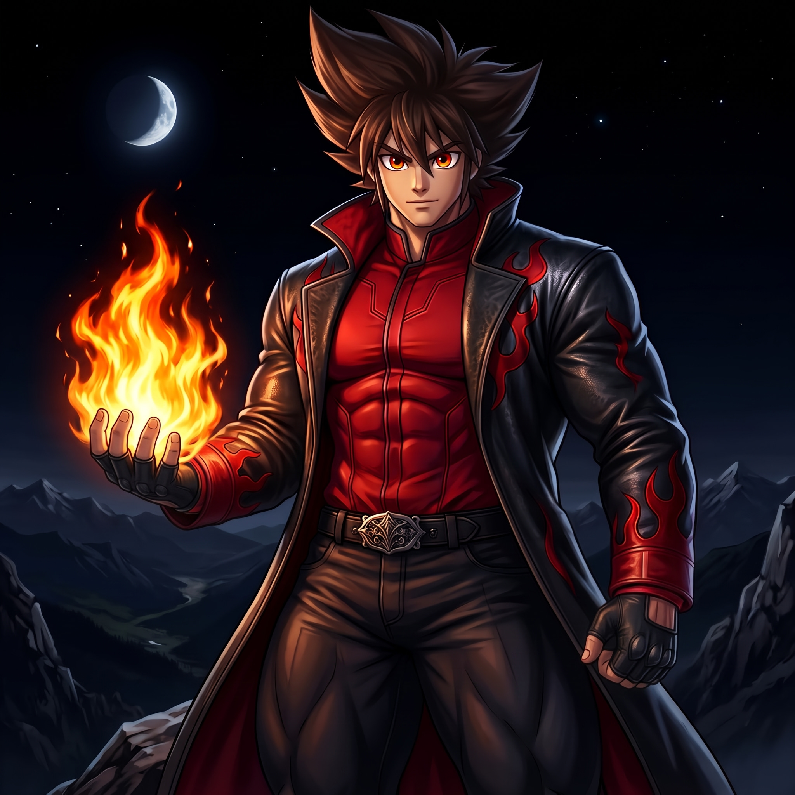
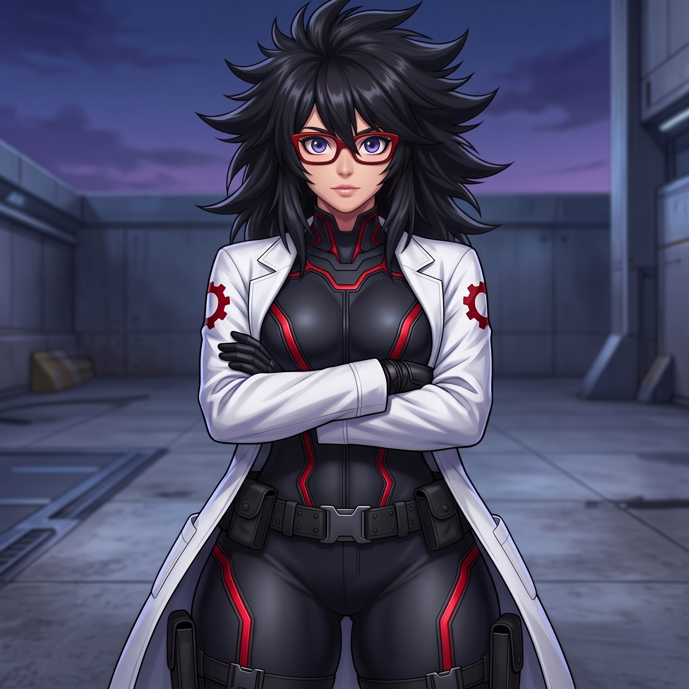
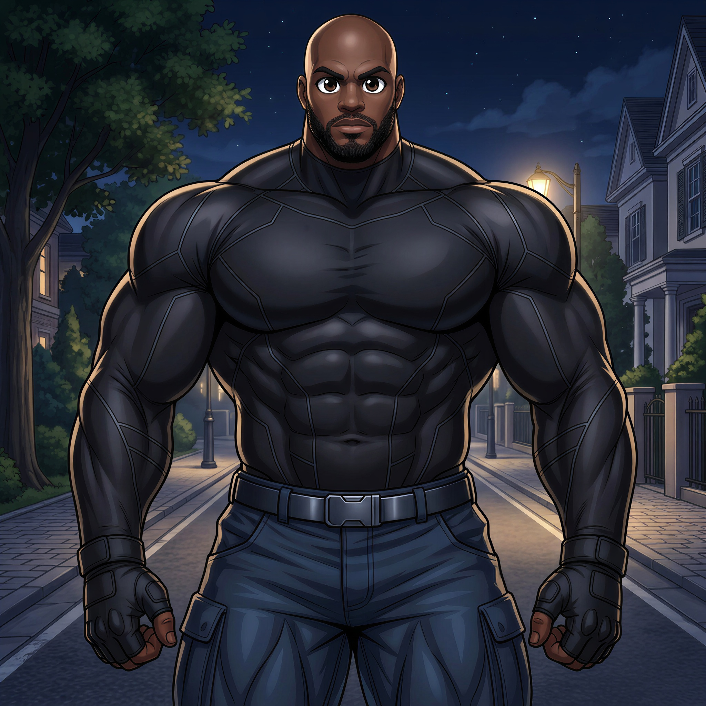
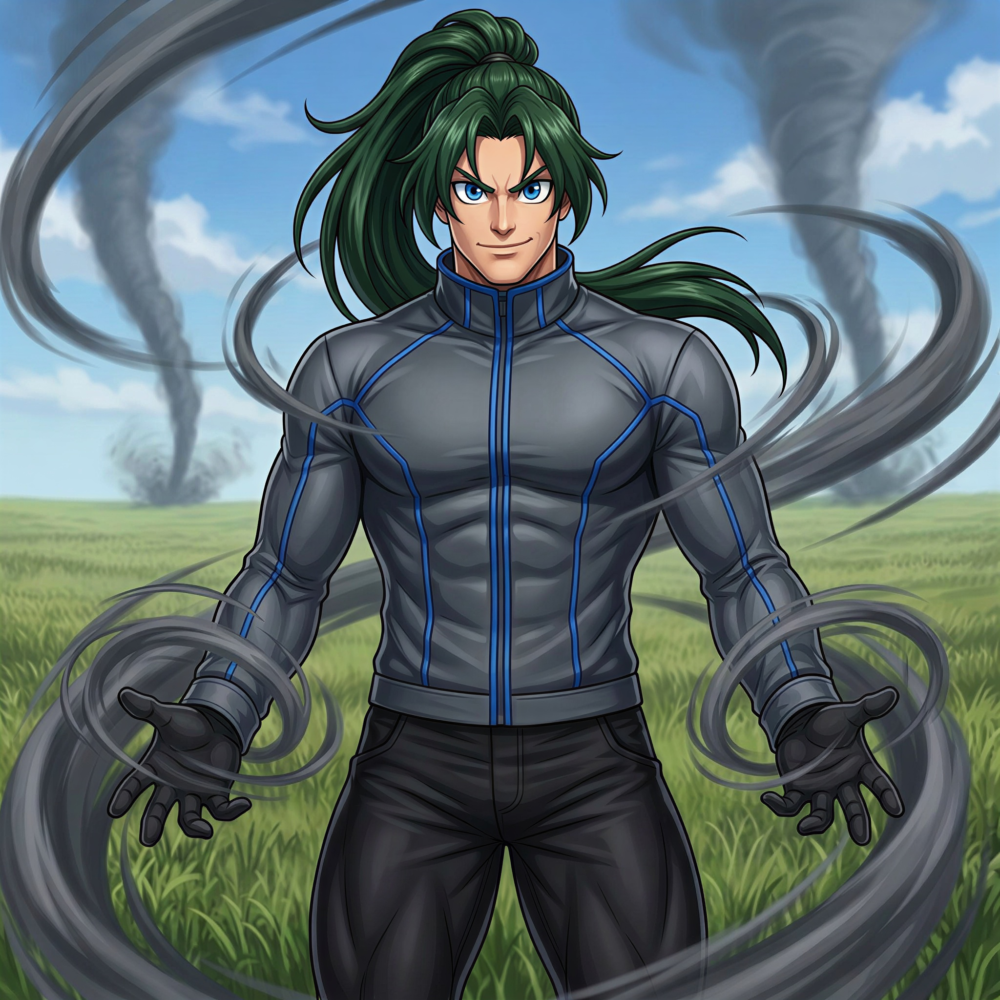
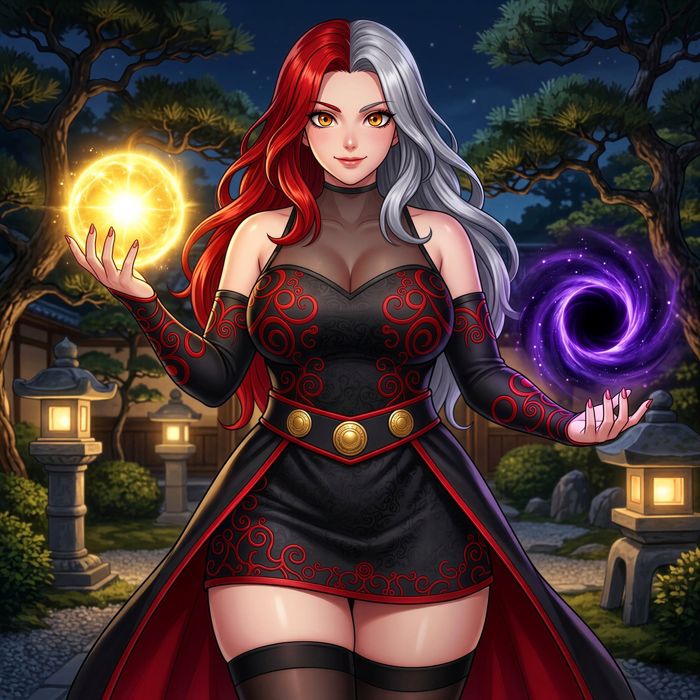

Registro: 23/07/2000 | 1,85 m | 102 kg
História: Igneus Kane foi abandonado ainda bebê na porta de um orfanato no Japão, crescendo como um gaijin sem saber quem era sua mãe ou por que foi deixado ali, tendo apenas uma foto antiga como única lembrança do passado. Tornou-se um jovem comum, inteligente e sarcástico, até que, na adolescência, seus poderes de manipulação do fogo despertaram de forma violenta durante um incidente urbano, resultando em feridos e grande destruição. Rotulado como uma ameaça, Igneus fugiu e passou meses escondido, temendo perder o controle de si mesmo, e nesse período foi encontrado por Kaizenro, um ex-lutador lendário que se tornou seu mentor e o treinou para dominar seus poderes e canalizar sua raiva através da disciplina e das artes marciais. Determinado a não ser definido pelo medo ou pelo passado, concluiu a faculdade no Canadá e decidiu se tornar um herói, usando seus poderes para proteger inocentes enquanto busca respostas sobre sua origem.

Registro: 11/02/2002 | 1,70 m | 69 kg
História: Aria Bastos nasceu em Campo Solaris, uma cidade futurista no interior de Minas Gerais, e chamou a atenção da mídia e de cientistas desde cedo por possuir QI 300, resultado de uma rara mutação genética. Porém, sua vida em casa era marcada por abusos: seus pais viam sua inteligência como algo anormal e perigoso, submetendo-a durante anos à violência física e psicológica, o que a fez criar um sistema de defesa em seu quarto ativado pelo controle remoto da TV. Aos 14 anos, quando a cidade foi atacada por um kaiju, seus pais aproveitaram o caos para tentar matá-la com uma faca sem levantar suspeitas, mas em desespero ela ativou o sistema e acabou matando-os em legítima defesa. Após a tragédia, ela fugiu para o Canadá para iniciar uma vida totalmente nova, conseguindo vaga no Vertex Institute of Technology (VIT), a maior universidade do país, onde atuava ao mesmo tempo como heroína através de sua tecnologia e de um treinamento que a fez atingir o auge do desempenho humano em combate.

Registro: 04/05/1999 | 2,01 m | 195 kg
História: Drake Harper nasceu na África do Sul, onde desde jovem canalizou sua paixão por boxe e wrestling em arenas clandestinas, formando-se em Engenharia Mecânica aos 24 anos e ingressando no exército em busca de propósito, até ser recrutado para a Operação Ystermurg. Sem conhecer a real natureza do programa, tornou-se o único sobrevivente do Projeto Bulbak, um experimento que reforçou seus ossos como aço e tornou sua pele impenetrável. Sua lealdade foi colocada à prova quando recebeu ordens para executar operações que ignoravam limites éticos, e ao se recusar, foi submetido a um protocolo de contenção neural ativado por seus superiores, mas tomado pela fúria, rompeu o controle, matou sua própria unidade e destruiu o projeto responsável por sua transformação. Após deixar o exército, mudou-se para o Canadá, onde passou a usar sua força e habilidades para combater criminosos, monstros e supervilões.

Registro: 12/10/2000 | 1,88 m | 92 kg
História: Gale Skylark nasceu nos Estados Unidos, filho de Marina Skylark, uma heroína aposentada conhecida por sua maestria na aerocinese. Desde pequeno, herdou dela o domínio sobre o vento, e Marina treinou-o com rigor até falecer de câncer quando ele tinha 14 anos. Determinado, Gale continuou seu treinamento sozinho, aperfeiçoando suas habilidades e estudando a ciência por trás do ar e da atmosfera. Aos 23 anos, formado em Ciências Atmosféricas, partiu em uma jornada pelo mundo, investigando atividades suspeitas e aperfeiçoando seu controle sobre os vento, desenvolvendo com Igneus uma rivalidade amigável, marcada por provocações, desafios constantes e profundo respeito mútuo em batalha.

Registro: 21/12/2002 | 1,65 m | 68 kg
História: Selena Sunderlund nasceu no interior de São Paulo como Helena Kuroyami, uma nikkei filha de um brasileiro e de Kisarune Kuroyami, líder do recluso Clã Amanokurai. Ela foi moldada para suceder a mãe, que corrompeu o clã após receber misteriosos poderes cósmicos de uma entidade desconhecida com uma presença sombria e avassaladora, fazendo com que Helena nascesse com uma mutação genética extremamente rara capaz de manipular as forças cósmicas da radiância e da vacuidade para o combate e a cura. Submetida a treinamentos brutais, ela rejeitou a crueldade implacável da mãe, e aos 16 anos, em sua primeira missão, matou os assassinos que a acompanhavam para escapar daquele destino. Sob a nova identidade de Selena Sunderlund, transformou esse fardo em propósito e passou a usar suas habilidades para proteger os inocentes.